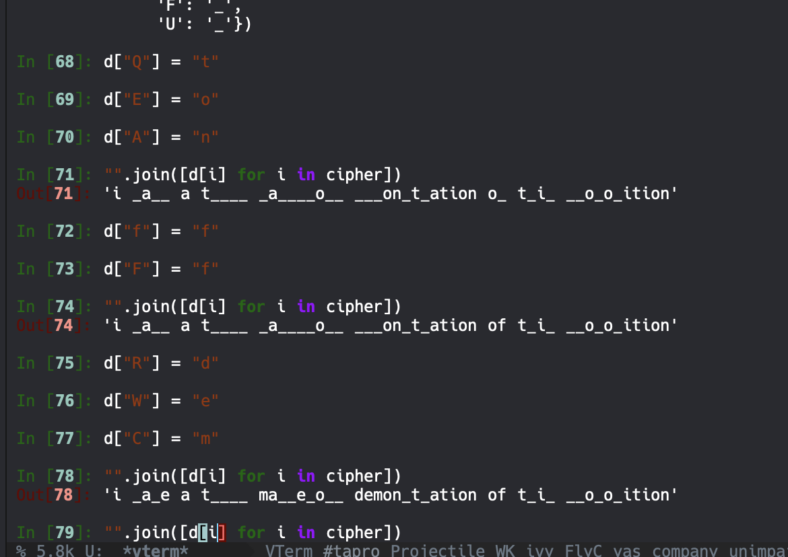

Backlinks
Table of Contents
1 Persons of Interest
1.1 Protagonists
- "Alice": person who sends the messages
- "Bob": recipient of the messages
1.2 Antagonists
- "Eve": the eavesdropper between Alice => Bob
2 Classical Cryptography
2.1 Caesar Cipher
Julius Ceaser's favourite means of cryptography was the "Caesar Cipher".
2.1.1 Algorithm
- Pick a number \(s\)
- Shift every letter forward by \(s\), we might have to wrap around ("y" shifted by \(3\) is "b")
2.1.2 Collisions
Sometimes, words could collide. The words "SLEEP" and "BUNNY" are related to each other by exactly a ceaser cipher.
2.1.3 Example
Plaintext: "Cryptography is Fun". Set \(s=5\). Ciphertext: "HWDUYTLWFUMD NX KZS"
To recover the original message, just shift letters down by \(s\).
2.2 Substitution Cipher
2.2.1 Algorithm
- Write down all the plaintext letters: a b c d e f g h i … you get the point
Think about a keyword or phrase that pairwise matches them, without repeats and uses all 24 letters

Then, pariwise match them

If we allow letters to encrypted by themselves, there is one set of possibility allowed.
"Any additional structure that you have in an algorithm will help eve."
2.2.2 Helping Eve
Let's see a bad encryption by the substitution cipher, and see what we could do.
"T PXVW X QNIOD CXNVWDEIK RWCEAKQNXQTEA EF QPTK UNEUEKTQTEA"
- We have two things: "T" must be "i", "X" must be a "a"
And then, after much consternation

- Spaces
We realized that this message is "shockingly" (not really) easy to crack. The spaces is a dead giveaway.
Hence, to make messages harder to decrypt, we rid of all the spaces and space the letters out in groups of five.
Therefore, we will encode it in the following way instead:
- Frequency Analysis
"T PXVW X QNIOD CXNVWDEIK RWCEAKQNXQTEA EF QPTK UNEUEKTQTEA" => "TPXVW XQNIO DCXNV WOEIK RWCEA KQNXQ TEAEF QPTKU NEUEK TQTEA"
Now, this is much harder to get rid of. If the substitution cipher is larger, we could do a frequency analysis to get ahead in breaking the cipher.
The most frequent letters for frequency analysis (through, deprecated. For the modern convention, look it up.), in decreasing order: ETAOINSHRDLCU.
Therefore, if we have a large body of text, we could work it out.
- n-Gram Analysis
Most common bigrams: "TH", "HE" Most common trigrams: "THE", "AND"
2.3 Vigeniere Cipher
2.3.1 Algorithum
Plaintext: "crypt ograph hyisf un" Key: "LIMEL IMELI MELIM EL"
- We first do a ceaser shift
- Then perform substitution, shifting the key
- Then we shift again
2.3.2 Alternative
Use the key once, then use the plaintext.
2.3.3 Helping Eve
- Kasiski Examination
- Look through cipher text and look for any longe strings of repeated letters
- The difference between the positions is probably the key length
When you look at repeated strings, could could figure small subsections of repeated values. In our example, its about 6.
Guess all possible positions when a common string takes place, and count various small key lengths.
3 Modern Cryptography
- Modern Cryptography requires a secure method of exchanging the key to set up a connection
- "It doesn't matter if it is impossible to figure out the key, it just has to be highly impractical"
3.1 A Number Theory Detour
3.1.1 Modular Arithmetic
Let \(m \in \mathbb{N}\). If \(a,b\) are integers, we say that \(a,b\) are congruent \(\mod m\) if they have the same remainder if you divide by \(m\). Equivalently, $a,b,$ are congruent \(\mod m\) if \(a-b\) is a multiple of \(m\). We write \(a \equiv b\ (\text{mod}\ m)\).
- Doing Basic Math
The cool thing is, we could do arithmetic with mods. We could add, subtract, multiply in modular arithmetic. For instance, if we know that \(a \equiv 2\ (\text{mod}\ 8)\) and \(b \equiv 5\ (\text{mod}\ 8)\), we could grantee that \(a+b \equiv 7\ (\text{mod}\ 8)\), \(a-b \equiv -3 \equiv 5 \ (\text{mod}\ 8)\), \(ab \equiv 10 \equiv 2 \ (\text{mod}\ 8)\).
- Fermat's Little Theorem
Let \(p\) be a prime.
- If \(a\in\mathbb{I}, a \not\equiv 0\ (\text{mod}\ p)\), then \(a^p-1 \equiv 1\ (\text{mod}\ p)\)
- If \(a \in \mathbb{I}\), then \(a^p \equiv a\ (\text{mod}\ p)\)
A Proof.
Consider the numbers \(a, 2a,3a, \cdots, (p-1)a\). None of them are divisible by \(p\). Furthermore, claim that no two are congruent modulo \(p\). Suppose on the contrary that \(ra \equiv sa\ (\text{mod}\ p)\). Then \((r-s)a \equiv 0\ (\text{mod}\ p)\). But neither factor can be a multiple of \(p\), so this is not possible.
Thus, \(a,2a,3a, \ldots, (p-1)a \equiv 1,2,3, \ldots p-1\ (\text{mod}\ p)\).
Therefore, \(a, 2a, 3a, \ldots, (p-1)a \equiv 1,2,3,\ldocs, p-1\ (\text{mod}\ p)\) in some order. Thus, \(a \cdot 2a \cdot \ldots (p-1)a = 1 \cdot 2 \cdot 3 \cdots (p-1)\ (\text{mod}\ p)\)..
- \(a^{p-1}(p-1)! \equiv (p-1)!\ (\text{mod}\ p)\)
- \((a^{p-1}-1)(p-1)! \equiv 0\ (\text{mod}\ p)\)
- \((a^{p-1}) \equiv 1\ (\text{mod}\ p)\)
- Totient Functions
Let \(n\) be a positive integer. The totient of \(n\), denoted as \(\phi(n)\) is the number of positive integers \(a \leq n\) such that \(gcd(a,n)=1\).
E.g \(n=10\), numbers \(\leq 10\) that are relatively prime to \(10\) are \(1,3,7,9\) so \(\phi (10) = 4\).
Then, suppose the prime factorization of \(n\) is \(n=p_1^{e_1}p_2^{e_2} \cdots p_r^{er}\) where $pi$s are distinct primes and each \(e_i \leq 1\).
Then:
\begin{equation} \phi(n) = n(1-\frac{1}{p_1})(1-\frac{1}{p_2})\cdots (1-\frac{1}{p_r}) \end{equation}If \(p,q\) are distinct primes, then \(\phi(pq) = (p-1)(q-1)\).
- Euler's Totient Theorem
If \(gcd(a,n) = 1\), then \(a^{\phi(n)} \equiv 1\ (\text{mod}\ n)\).
- One more Theorem
If \(p\) is prime, then there is some integer \(g\), depending on a \(p\) such that \(g,g^2, g^3, \ldots, g^{p-1}\) are all distinct modulo \(p\). Such a number \(g\) is called a primitive root modulo \(p\).
- The Euclidean Algorithum
There is, actually, an easy way of calculating the GCD of two values without factoring them. \(gcd(a,b) = gcd(a,b-a)\).
If \(d\) is any factor of \(a,b\), say \(a=kd\), \(b=ld\). Then \(b-a = (l-k)d\). \(gcd(301,161)=gcd(161,140)=gcd(140,21)=gcd(21,14)=gcd(7,0)=7\). You will realize this is just subtracting gcd together.
- Bezout's lemma
If \(a,b\) are integers, then \(gcd(a,b)\) is the smallest positive integer \(d\) such that there exist integers \(x,y\) with \(ax+by=d\).
3.2 Diffe-Helman
Alice computes \(k_1 = B^1 mod\ p\), and Bob computes \(k_2 = A^b\) mod \(p\). \(k_1 = k_2\), so this is a shared piece of information, which can be used as a key.
- \(k_1 = B^a \equiv (g^b)^a \equiv g^{ab}\ (\text{mod}\ p)\)
- \(k_2 = A^b \equiv (g^a)^b \equiv g^{ab}(\text{mod}\ p)\)
3.2.1 Discrete Logarithm Problem
Given a prime \(p\), \(a\) primitive root \(g\), and a nonzero residue class \(x\) (mod p), find a number a s.t. \(g^a \equiv x\ (\text{mod}\ p)\).
3.2.2 El Gamal Crypto
Plaintext message \(m\): number mod \(p\). Bob computes \(b\) secretly and computers \(B=g^b \mod p\) and distributes it. Alice has a plaintext message \(m\) to send to Bob. She picks a random $a$a, and computes \(A=g^a \mod b\) and \(C=B^a m \mod p\). She sends both \(A\) and \(c\) to Bob.
Bob has to recover \(m\) from \(A,c\) and other info he knows. He computes \(m=A^{-b}c \mod p\). Which is the plaintext.
3.3 RSA
Alice wishes to send a message to Bob.
Bob picks two primes, \(p,q\), secret. He then computes \(n=pq\). He also chooses an encryption exponent, \(e\) such that \(gcd(e,\phi(n) = 1\). His public key is \((n,e)\). He can find a number \(d\) such that \(de\equiv 1\mod \phi( n )\). Since \(gcd(e, \phi(n)) = 1\), \(\exists d,k\ s.t.\ de+k \phi(n) =1\).
If \(p\) is prime, and \(p+a\), then \(a^{p-1} \equiv 1 \mod p\). So, if I want to check if \(n\) is composite, pick a random \(a\), not a multiple of \(n\), then compute \(a^{n-1}\) and see if its \(1\).
Alice wishes to send a plaintext \(m\) to Bob.
3.3.1 Stupid Uses of RSA
Alice wants to send either a yes or no to bob. Suppose she encodes yes as \(73\), and no as \(149\). She encrypts it, and sends it along to Bob. What's wrong?
The number of messages is pretty small, Eve could just try all possible combinations to figure out what the secret is. i.e. try \(73\), then try \(149\).
Alice has a long message, some alphabetical message, she converts each digit to a number seperately, then encrypts each number. Then encrypts each number, then sends all these numbers to Bob.
3.3.2 Fixing Stupid RSA: Padding
Take your message, then add on 100 random digits in the end. Once you did that, then you encrypt it. Then, Eve can't check every combination.